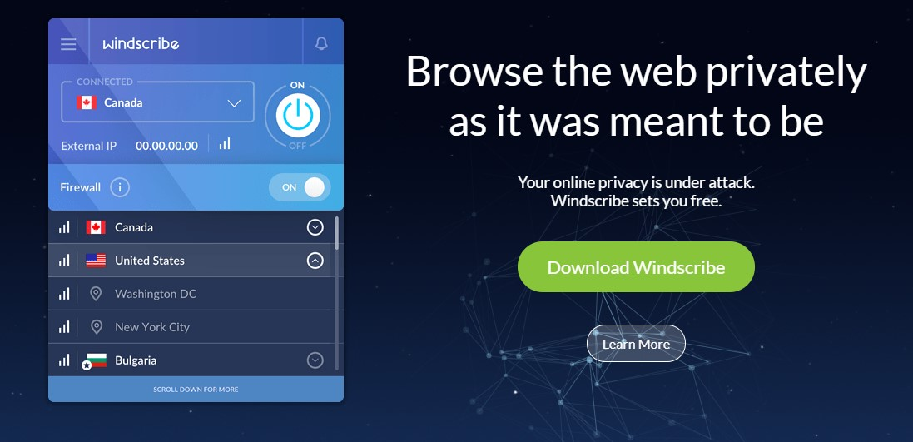
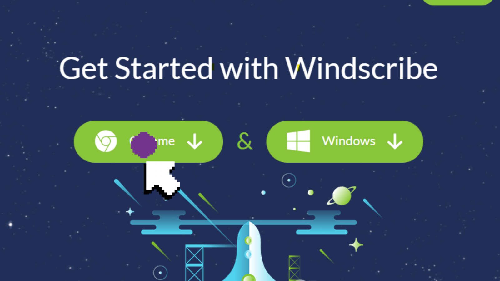
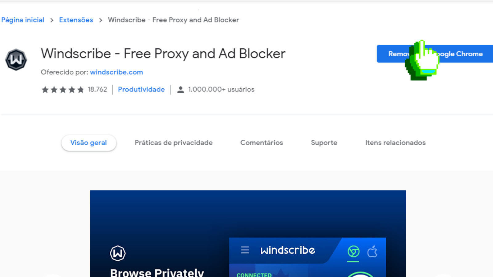

Passo 1
Baixe a Windscribe
Windscribe é um conjunto de ferramentas que funcionam juntas para bloquear rastreadores de anúncios e web beacons, restaurar o acesso ao conteúdo bloqueado e ajudá-lo a proteger sua privacidade online. Vamos usar ele para acessar o site.
Processo de intalação do Windscribe:
- Clique em download
- Você vai precisar do Google Chrome (O Windscribe será baixado como extensão nele)
- Clique na opção Chorme
Vai abrir a seguinte janela você irá adicionar para o Google Chrome ele será adicionado é só esperar. (O meu está desta forma pois eu já adicionei)
